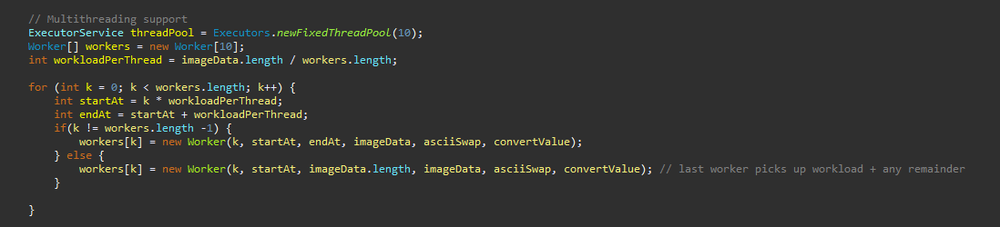
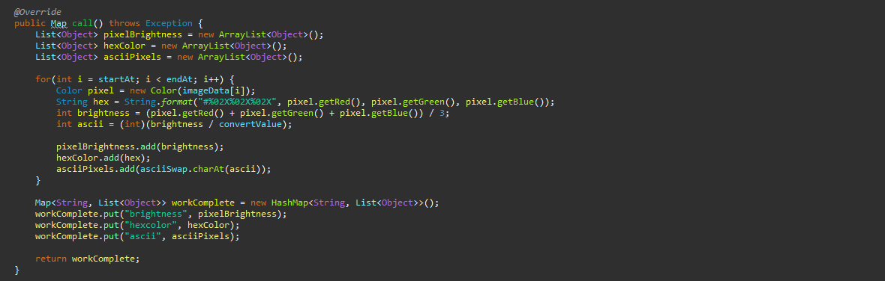
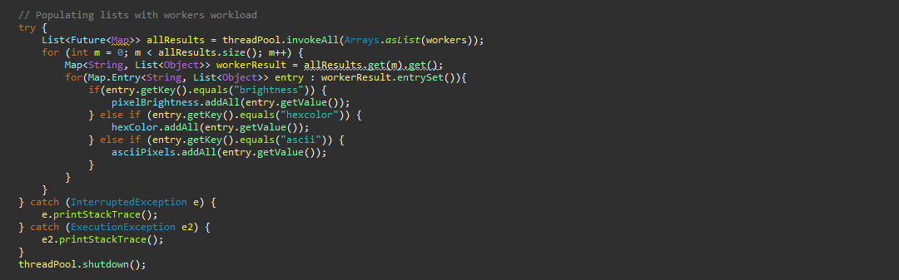

Multi-threading & Concurrency - Ascii Art

[Follow up from Ascii to Art]
One of the issues I encountered during my previous project, was the time it took to process high resolution images. I made a work-around on the last project by downscaling the images before processing it, but I knew this could be improved by implementing multi-threading.
So first of all, I reviewed my code and was able to improve it by populating all of the arrays within one loop, rather than two as previous, which helped speed it up slightly. I then had to decide how I was going to do distibute the workload to each worker and settled on the below solution. As you can see, I pass the array through to each worker, providing them each with a equal but unique chunk/section to process. The only exception being the last worker, who also processes the remaining indexes that couldn't be split out.

Each worker is also given a unique ID (which comes in handy later!) and a couple other parameters required to complete their task, which in case you didn't watch the previous video, are the following;
■ Arraylist of brightness value of each pixel
■ Arraylist of hex color of each pixel
■ Arraylist of ASCII representation of each pixel (ie. ;Il!i~+_$#)
I decided to have the Worker class implement Callable<V> so that I could return a value. The value needed to contain all 3 arrays, so I could've passed an array of arrays but I also needed to know which array was which. So I settled on using a Map<String, List<Object>> so I could give each key to identify them later.

So once all of the above work has been completed, I'm left with 10 (that's how many workers/threads I chose) Map's all containing a section of the original array, processed into 3 Lists. So now I was left with the task of combining these Lists togethor, in the correct order, so that I could use this data as intended. This is where the unique ID that I gave each worker earlier comes in handy, as well as the 'key' I had given in the Map to represent each List.

Overall I am happy with the results, as you may have seen on the overview, I was able to reduce the processing time from 24 seconds down to under 10 seconds! The image in question was 7.86MB large, dimensions of 4524x3016 with 300dpi.